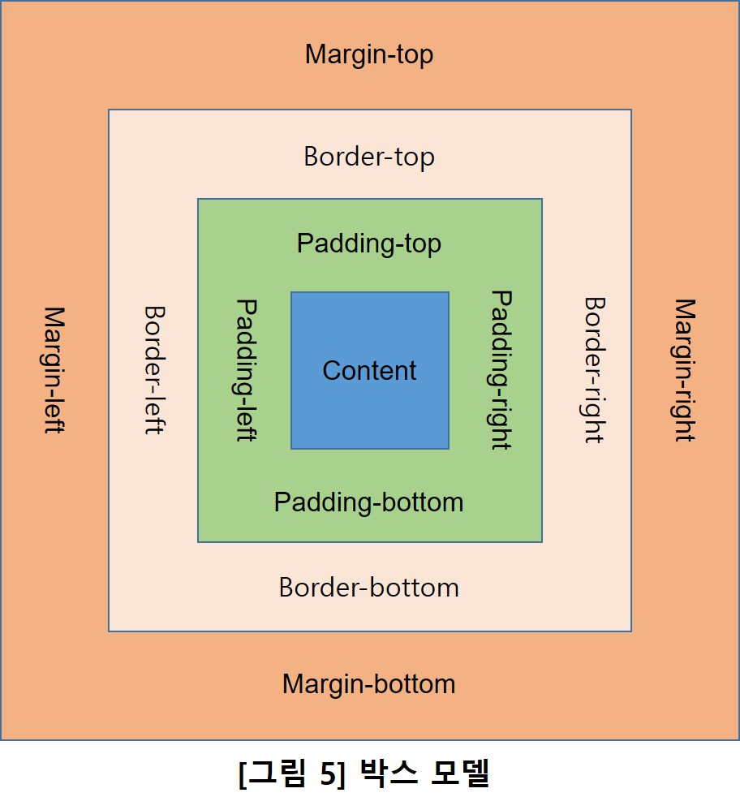

CSS(Cascading Style Sheets) is a style sheet language used for describing
the presentation of a document written in a markup language such as
HTML or XML (including XML dialects such as SVG, MathML or XHTML).
CSS describes how HTML elements are to be displayed on screen, paper, or in other media.
- 글꼴 변경, 문자의 크기, 색상, 정렬, 배경이미지 등
- 웹페이지 디자인 개선을 하고자 하는 요구
- 다양한 디바이스와 스크린 사이즈에 맞게 display되어야하는 요구
- 이러한 요구를 기존 HTML 문법이 해결하지 못함
- 기존 HTML에 새로운 문법태그를 추가 : <font> 태그
- 완전히 근본적인 해결을 위한 새로운 언어의 개발 : CSS
- 이것은 <font>태그를 사용하여 글자의 색깔을 변경하였다
- 웹이 복잡해지면 단순한 태그만으로 표현하기 어려운 점이 많아짐
- 다른 태그들(<a>=링크, <h1>=제목 등)과는 달리 태그 자체에 정보가 담겨 있지 않음.
검색 엔진에 의해서 검색될 때 정보가 담긴 태그가 매우 중요한 것은 의심의 여지가 없다.
- 수정해야할 문장이 기하급수적으로 늘어나면 수작업을 모두 감당하기 어렵다.
- CSS는 이러한 반복적인 작업을 뛰어 넘게 하는 언어
<!-- 내용 -->
==> "주석태그" : 꺽쇠 안의 내용은 무시하고 웹에 표시하지 말라는 태그>
- Web browser는 html 언어만을 해석/처리하는 프로그램
- 모든 코드를 html로 해석한다
- html 문법태그를 이용하여 CSS 문법 임을 알려야 한다
- <style>태그라는 HTML문법을 사용하여 CSS문법을 선언
- <style> 이 부분에 CSS 문법을 표시 </style>
- <head> 부분에 다음과 같은 명령을 한다.
<head>
<style>
a {color:green;} <= 이 문서의 모든 a 태그 내용은 모두 녹색으로 표시하라는 뜻.
</style>
</head>
- CSS의 문법은 웹페이지 전체에 영향을 미치기 때문에 일일이 바꾸지 않고
한번의 명령으로 웹 전체를 바꿀 수 있다.
- 중복의 제거 효과 : 똑같은 태그를 수만번 사용하지 않아도 된다.
- 수정 및 관리가 편하다.
- 정보의 전달은 HTML, 디자인은 CSS로 특화했다고 볼 수 있다.
- 웹페이지에 있는 선택자에 해당하는 모든 태그에게 효과 적용
- color:red; => 글자 색을 빨간색
- text-decoration:none; => 글자 꾸미기 없음
- text-decoration:underline; => 글자에 밑줄 표시
- Prorety를 검색을 통해서 스스로 알아내보자
이 문장은 font-size : 15, text-align : center를 적용한 문장입니다
- 같은 순위라면 가장 최근에(마지막에) 표시한 selector가 우선.
- <div> , <span>
<div class="class1" id="id1"> 내용 <div>
<span class="class1" id="id2"> 내용 <span>
<head>
<style>
#id1 { color: red;}
.class2 { color:blue;}
h1 { color: green;}
</style>
</head>
- 링크 태그인 <a>는 전부 글자 색을 green으로 표시하였다 - 제목 태그인 <h1~h4>는 font-size를 달리 하였다 - 이미지 태그인 <img>는 width:640px로 정했다
- * 예시 라는 문구는 모두 <div class="예시"> 태그와 class는 예시 로 명명.
.예시 {color:blue; font-size:18px;}로 CSS 선언을 하였다
- 선택자라는 글자는 모두 <span class="선택자"> 태그와
class는 선택자 로 명명.
- .선택자 {font-style: italic;}로 CSS 선언을 하였다
- 선택자 <===== class=선택자
- 특별히 이 문장에 있는 선택자는
class는 선택자, id는 고유선택자로 명명.
- #고유선택자 {color:red;}로 선언을 하였다
- 선택자 <===== id=고유선택자, class=선택자
<style>
#고유선택자 {color:red;}
.예시 {color:blue; font-size:18px;}
.선택자 {font-style: italic;}
a {color:green;}
h1 {font-size:45px;}
h2 {font-size:30px;}
h3 {font-size:25px;}
h4 {font-size:20px;}
img {width:640px;}
</style>
- 모든 HTML 요소(element)는 박스 모양으로 구성되어 있다.
- width(너비)와 height(높이) 속성의 영향을 받음
- color는 바꿀수 없음. 간격 size만 조절
- 테두리 두께, 색깔, 선의 종류
- 간격 size만 조절
- 웹페이지 우클릭 ==> 검사 메뉴 에서 확인 가능
- CSS의 Display property의 Value값 중 가장 기본이 되는 것에는 inline, block, inline-block이 있다.
: 전후 줄바꿈이 없이 한 줄에 다른 element와 나란히 배치되는 element
- <span>, <a>, <em> 태그 등
- width, height 속성은 무시
- border 속성은 반영
- padding, margin 속성은 좌우 간격만 반영되며, 상하 간격은 무시
: 전후 줄바꿈이 되어 혼자서 한 줄을 차지한다.
- <div>, <p>, <h1~h4> 태그 등
- width, height, padding, border, margin 속성 반영
: 전후 줄바꿈 없음. 그외 block 속성 반영
- <button>, <input>, <select> 태그 등
- width, height, padding, border, margin 속성 반영
- display : inline-block 이라고 명시적으로 지정해야만 함.
div {
background-color:coral;
width:400px;
height:50px;
padding:40px;
border:10px solid maroon;
margin:30px;
}
</style>
* Diaplay 속성값
1) display:none => 내용이 모두 화면에서 나타나지 않음
2) display:inline => inline element로 바꿈
3) display:block => block element로 바꿈
박스 모델과 Display 실습은 박스 모델 실습 따로 만들었습니다.
- element를 block level grid container로 보여준다.
- <div> contents1 </div> <div> contents2 </div>
* <div>는 의미없는 태그로서 block element로 만들어준다
* <span>은 의미없는 태그로서 inline element로 만들어준다
<style>
#grid { display:grid; grid-template-columns:150px 1fr; }
</style>
<body>
<div id="grid">
<div> contents1 </div> <div> contents2
</div>
</body>
Grid 실습은 그리드 실습 따로 만들었습니다.
- 디바이스의 디스플레이 종류에 반응하여 적절히 UI가 유기적으로 배치되도록 설계된 웹
- 특정한 조건에서 CSS 속성을 부여하는 CSS 기술
- width and height of the viewport
- width and height of the device
- orientation
- resolution
- @media(조건) {CSS-code}
@media (max-width:600px) {
div {
display : none;
}
Media Query 실습은 미디어쿼리 실습 따로 만들었습니다.
- HTML 태그의 style속성으로 사용 ( <h1 style="속성값"> )
- head section에 <style> </style> 사용
- 외부 style sheet 문서( *.CSS)를 이용하는 것
- 현재 문서(the current document)와 외부 문서(external resource)와의 관계를 정의하는 HTML 문법 태그
- head section에서 서술
- <link rel="stylesheet" href=*.CSS">